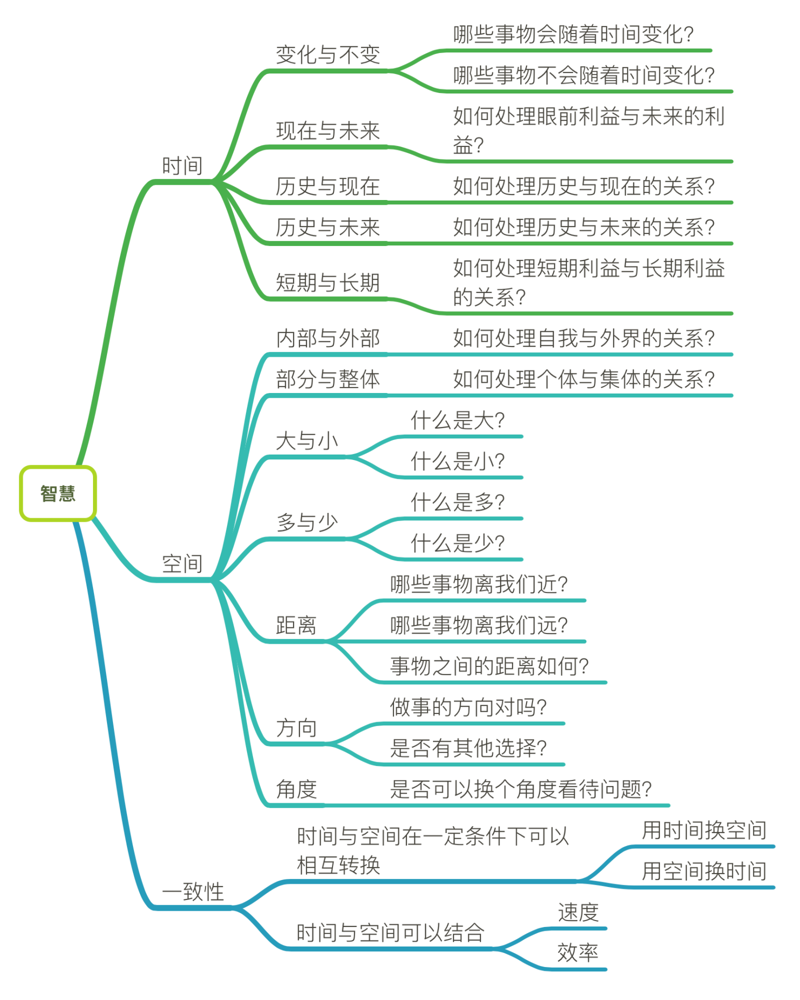

平衡和度
什么是智慧
一直以来我都很认同大道至简的看法
所以我天真的认为处理世界上的所有事情肯定有一个通用的框架, 该框架应该适用于所有麻烦的事情
而我们庸庸众人只需要学习这一种处事方式就能轻松应付生活,即所谓的The One Truth
后来的我渐渐意识到,世界本来就是混乱无序的, 那个万能法则肯定是不存在的
从物理学上来讲, 一个封闭的系统中, 熵(代表混乱程度)处在不断增加的状态,一味地想维持低熵状态往往需要额外的付出更多能量.同样的,如果我强行要求这个系统是有序的并且规则的,那对这个系统来说,必然需要极大的能量来维持这种状态
智慧的本质, 就是对空间和时间的理解

所谓智慧, 就是能很好地平衡时间和空间, 而怎么平衡, 就涉及到度的把握
度
度或者叫分寸, 一种抉择中的取舍
我们无时无刻不在面临许多的抉择
大部分的抉择都存在我们可以感知的正面和反面效果,即便看起来非常正面的行为背后也隐藏着隐忧
例如:
- 培养好的习惯是应该的, 但是好的习惯不可能一直增加. 我们的精力是有限的,我们所处的的环境也在不断改变, 根据环境调整自己习惯才是我们要做的,否则随着时间增加我们的习惯也越来越多,如果不及时调整, 你的所有时间会被积累下来的习惯完全占据
一个人在待人接物方面能很好地把握分寸, 我们会说他情商高
一个人在自己和外界的联系方面能很好地把握分寸, 我们会说他有品位
一个人在处理冲突方面能很好地把握分寸, 我们会说他有智慧